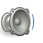

<!--
  Generated template for the Sura page.

  See http://ionicframework.com/docs/components/#navigation for more info on
  Ionic pages and navigation.
-->
<ion-header>

  <ion-navbar>
    <ion-title>  ({{suraIndex}}) {{suraTitle}} <button ion-button small>NEXT</button></ion-title>
    
  </ion-navbar>

</ion-header>


<ion-content >
  <div class="mainControllsContainer">
  <!---->
  <versesound></versesound>  
  
  </div>
  
  <ion-card>
    <ion-card-header>
      
    </ion-card-header>
  <ion-card-content *ngFor="let sura of suraData">
      <div class="verse">{{sura.text}}</div>
      <div class="translation">{{sura.translations}}</div>
      
      <div class="verseControls">
        
        <div class="verseAudio">
          <audio controls>
            <source src="{{sura.audio}}">
          </audio>
        </div>
        <div class="verseVideo">
          <audio controls>
            <source src="{{sura.Video}}">
          </audio>
        </div>
      </div>
      
    </ion-card-content>
  </ion-card>
<!--<div *ngFor="let meaning of translationData" >{{meaning.text}}</div>-->

</ion-content>
  <!--<div  *ngFor="let sura of suraData" class="ayaimg">
        
      </div>-->